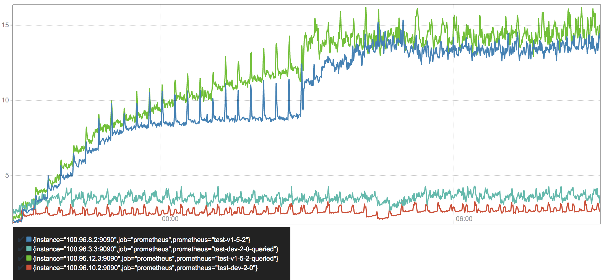
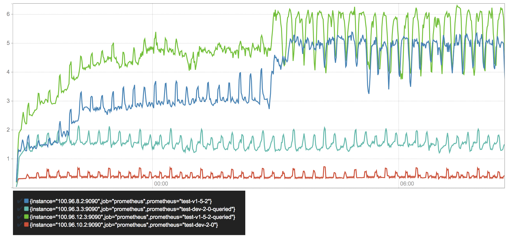
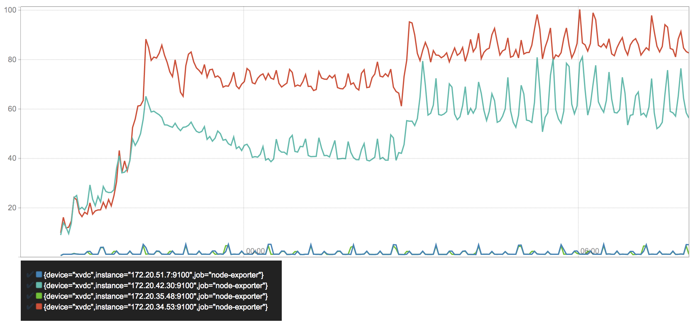
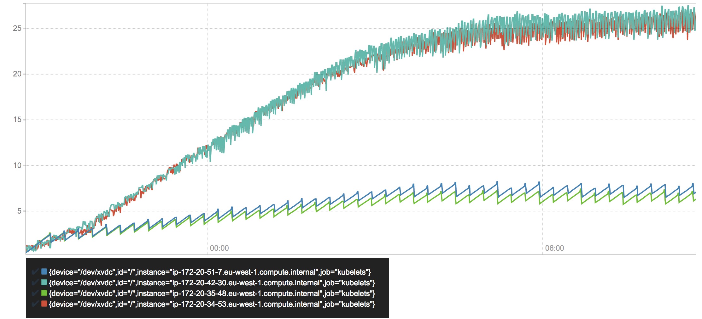
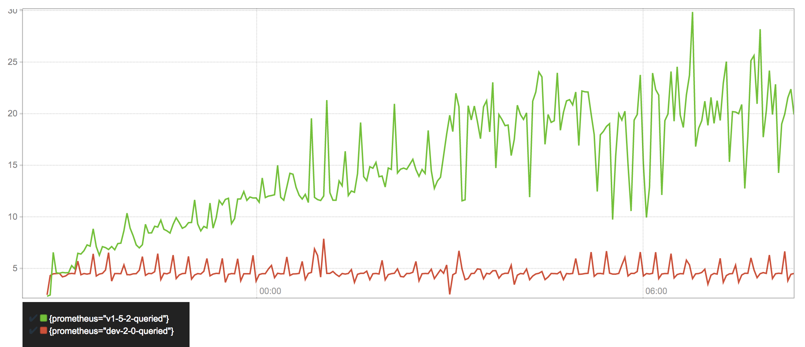
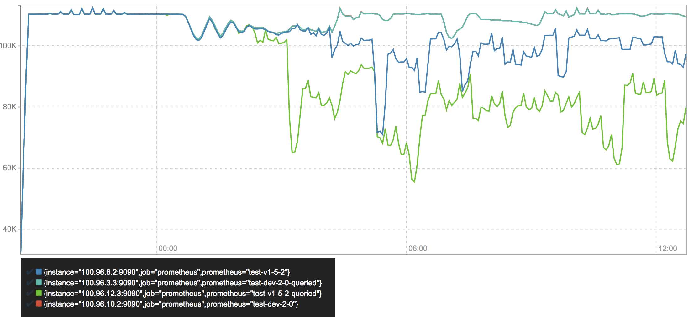

I work on monitoring. In particular on Prometheus, a monitoring system that includes a custom time series database, and its integration with Kubernetes.
In many ways Kubernetes represents all the things Prometheus was designed for. It makes continuous deployments, auto scaling, and other features of highly dynamic environments easily accessible. The query language and operational model, among many other conceptual decisions make Prometheus particularly well-suited for such environments. Yet, if monitored workloads become significantly more dynamic, this also puts new strains on monitoring system itself. With this in mind, rather than doubling back on problems Prometheus already solves well, we specifically aim to increase its performance in environments with highly dynamic, or transient services.
Prometheus’s storage layer has historically shown outstanding performance, where a single server is able to ingest up to one million samples per second as several million time series, all while occupying a surprisingly small amount of disk space. While the current storage has served us well, I propose a newly designed storage subsystem that corrects for shortcomings of the existing solution and is equipped to handle the next order of scale.
Note: I’ve no background in databases. What I say might be wrong and mislead. You can channel your criticism towards me (fabxc) in #prometheus on Freenode.
Problems, Problems, Problem Space
First, a quick outline of what we are trying to accomplish and what key problems it raises. For each, we take a look at Prometheus’ current approach, what it does well, and which problems we aim to address with the new design.
Time series data
We have a system that collects data points over time.
identifier -> (t0, v0), (t1, v1), (t2, v2), (t3, v3), ....
Each data point is a tuple of a timestamp and a value. For the purpose of monitoring, the timestamp is an integer and the value any number. A 64 bit float turns out to be a good representation for counter as well as gauge values, so we go with that.
A sequence of data points with strictly monotonically increasing timestamps is a series, which is addressed by an identifier. Our identifier is a metric name with a dictionary of label dimensions. Label dimensions partition the measurement space of a single metric. Each metric name plus a unique set of labels is its own time series that has a value stream associated with it.
This is a typical set of series identifiers that are part of metric counting requests:
requests_total{path="/status", method="GET", instance=”10.0.0.1:80”}
requests_total{path="/status", method="POST", instance=”10.0.0.3:80”}
requests_total{path="/", method="GET", instance=”10.0.0.2:80”}
Let’s simplify this representation right away: A metric name can be treated as just another label dimension — __name__ in our case. At the query level, it might be be treated specially but that doesn’t concern our way of storing it, as we will see later.
{__name__="requests_total", path="/status", method="GET", instance=”10.0.0.1:80”}
{__name__="requests_total", path="/status", method="POST", instance=”10.0.0.3:80”}
{__name__="requests_total", path="/", method="GET", instance=”10.0.0.2:80”}
When querying time series data, we want to do so by selecting series by their labels. In the simplest case {__name__="requests_total"} selects all series belonging to the requests_total metric. For all selected series, we retrieve data points within a specified time window.
In more complex queries, we may wish to select series satisfying several label selectors at once and also represent more complex conditions than equality. For example, negative (method!="GET") or regular expression matching (method=~"PUT|POST").
This largely defines the stored data and how it is recalled.
Vertical and Horizontal
In a simplified view, all data points can be laid out on a two-dimensional plane. The horizontal dimension represents the time and the series identifier space spreads across the vertical dimension.
series
^
│ . . . . . . . . . . . . . . . . . . . . . . {__name__="request_total", method="GET"}
│ . . . . . . . . . . . . . . . . . . . . . . {__name__="request_total", method="POST"}
│ . . . . . . .
│ . . . . . . . . . . . . . . . . . . . ...
│ . . . . . . . . . . . . . . . . . . . . .
│ . . . . . . . . . . . . . . . . . . . . . {__name__="errors_total", method="POST"}
│ . . . . . . . . . . . . . . . . . {__name__="errors_total", method="GET"}
│ . . . . . . . . . . . . . .
│ . . . . . . . . . . . . . . . . . . . ...
│ . . . . . . . . . . . . . . . . . . . .
v
<-------------------- time --------------------->
Prometheus retrieves data points by periodically scraping the current values for a set of time series. The entity from which we retrieve such a batch is called a target. Thereby, the write pattern is completely vertical and highly concurrent as samples from each target are ingested independently.
To provide some measurement of scale: A single Prometheus instance collects data points from tens of thousands of targets, which expose hundreds to thousands of different time series each.
At the scale of collecting millions of data points per second, batching writes is a non-negotiable performance requirement. Writing single data points scattered across our disk would be painfully slow. Thus, we want to write larger chunks of data in sequence.
This is an unsurprising fact for spinning disks, as their head would have to physically move to different sections all the time. While SSDs are known for fast random writes, they actually can’t modify individual bytes but only write in pages of 4KiB or more. This means writing a 16 byte sample is equivalent to writing a full 4KiB page. This behavior is part of what is known as write amplification, which as a bonus causes your SSD to wear out – so it wouldn’t just be slow, but literally destroy your hardware within a few days or weeks.
For more in-depth information on the problem, the blog series “Coding for SSDs” series is a an excellent resource. Let’s just consider the main take away: sequential and batched writes are the ideal write pattern for spinning disks and SSDs alike. A simple rule to stick to.
The querying pattern is significantly more differentiated than the write the pattern. We can query a single datapoint for a single series, a single datapoint for 10000 series, weeks of data points for a single series, weeks of data points for 10000 series, etc. So on our two-dimensional plane, queries are neither fully vertical or horizontal, but a rectangular combination of the two.
Recording rules mitigate the problem for known queries but are not a general solution for ad-hoc queries, which still have to perform reasonably well.
We know that we want to write in batches, but the only batches we get are vertical sets of data points across series. When querying data points for a series over a time window, not only would it be hard to figure out where the individual points can be found, we’d also have to read from a lot of random places on disk. With possibly millions of touched samples per query, this is slow even on the fastest SSDs.
Reads will also retrieve more data from our disk than the requested 16 byte sample. SSDs will load a full page, HDDs will at least read an entire sector. Either way, we are wasting precious read throughput.
So ideally, samples for the same series would be stored sequentially so we can just scan through them with as few reads as possible. On top, we only need to know where this sequence starts to access all data points.
There’s obviously a strong tension between the ideal pattern for writing collected data to disk and the layout that would be significantly more efficient for serving queries. It is the fundamental problem our TSDB has to solve.
Current solution
Time to take a look at how Prometheus’s current storage, let’s call it “V2”, addresses this problem.
We create one file per time series that contains all of its samples in sequential order. As appending single samples to all those files every few seconds is expensive, we batch up 1KiB chunks of samples for a series in memory and append those chunks to the individual files, once they are full.
This approach solves a large part of the problem. Writes are now batched, samples are stored sequentially. It also enables incredibly efficient compression formats, based on the property that a given sample changes only very little with respect to the previous sample in the same series. Facebook’s paper on their Gorilla TSDB describes a similar chunk-based approach and introduces a compression format that reduces 16 byte samples to an average of 1.37 bytes. The V2 storage uses various compression formats including a variation of Gorilla’s.
┌──────────┬─────────┬─────────┬─────────┬─────────┐ series A
└──────────┴─────────┴─────────┴─────────┴─────────┘
┌──────────┬─────────┬─────────┬─────────┬─────────┐ series B
└──────────┴─────────┴─────────┴─────────┴─────────┘
. . .
┌──────────┬─────────┬─────────┬─────────┬─────────┬─────────┐ series XYZ
└──────────┴─────────┴─────────┴─────────┴─────────┴─────────┘
chunk 1 chunk 2 chunk 3 ...
While the chunk-based approach is great, keeping a separate file for each series is troubling the V2 storage for various reasons:
- We actually need a lot more files than the number of time series we are currently collecting data for. More on that in the section on “Series Churn”. With several million files, sooner or later way may run out of inodes on our filesystem. This is a condition we can only recover from by reformatting our disks, which is as invasive and disruptive as it could be. We generally want to avoid formatting disks specifically to fit a single application.
- Even when chunked, several thousands of chunks per second are completed and ready to be persisted. This still requires thousands of individual disk writes every second. While it is alleviated by also batching up several completed chunks for a series, this in return increases the total memory footprint of data which is waiting to be persisted.
- It’s infeasible to keep all files open for reads and writes. In particular because ~99% of data is never queried again after 24 hours. If it is queried though, we have to open up to thousands of files, find and read relevant data points into memory, and close them again. As this would result in high query latencies, data chunks are cached rather aggressively leading to problems outlined further in the section on “Resource Consumption”.
- Eventually, old data has to be deleted and data needs to be removed from the front of millions of files. This means that deletions are actually write intensive operations. Additionally, cycling through millions of files and analyzing them makes this a process that often takes hours. By the time it completes, it might have to start over again. Oh yea, and deleting the old files will cause further write amplification for your SSD!
- Chunks that are currently accumulating are only held in memory. If the application crashes, data will be lost. To avoid this, the memory state is periodically checkpointed to disk, which may take significantly longer than the window of data loss we are willing to accept. Restoring the checkpoint may also take several minutes, causing painfully long restart cycles.
The key take away from the existing design is the concept of chunks, which we most certainly want to keep. The most recent chunks always being held in memory is also generally good. After all, the most recent data is queried the most by a large margin.
Having one file per time series is a concept we would like to find an alternative to.
Series Churn
In the Prometheus context, we use the term series churn to describe that a set of time series becomes inactive, i.e. receives no more data points, and a new set of active series appears instead.
For example, all series exposed by a given microservice instance have a respective “instance” label attached that identifies its origin. If we perform a rolling update of our microservice and swap out every instance with a newer version, series churn occurs. In more dynamic environments those events may happen on an hourly basis. Cluster orchestration systems like Kubernetes allow continuous auto-scaling and frequent rolling updates of applications, potentially creating tens of thousands of new application instances, and with them completely new sets of time series, every day.
series
^
│ . . . . . .
│ . . . . . .
│ . . . . . .
│ . . . . . . .
│ . . . . . . .
│ . . . . . . .
│ . . . . . .
│ . . . . . .
│ . . . . .
│ . . . . .
│ . . . . .
v
<-------------------- time --------------------->
So even if the entire infrastructure roughly remains constant in size, over time there’s a linear growth of time series in our database.
While a Prometheus server will happily collect data for 10 million time series, query performance is significantly impacted if data has to be found among a billion series.
Current solution
The current V2 storage of Prometheus has an index based on LevelDB for all series that are currently stored. It allows querying series containing a given label pair, but lacks a scalable way to combine results from different label selections.
For example, selecting all series with label __name__="requests_total" works efficiently, but selecting all series with instance="A" AND __name__="requests_total" has scalability problems. We will later revisit what causes this and which tweaks are necessary to improve lookup latencies.
This problem is in fact what spawned the initial hunt for a better storage system. Prometheus needed an improved indexing approach for quickly searching hundreds of millions of time series.
Resource consumption
Resource consumption is one of the consistent topics when trying to scale Prometheus (or anything, really). But it’s not actually the absolute resource hunger that is troubling users. In fact, Prometheus manages an incredible throughput given its requirements.
The problem is rather its relative unpredictability and instability in face of changes. By its architecture the V2 storage slowly builds up chunks of sample data, which causes the memory consumption to ramp up over time. As chunks get completed, they are written to disk and can be evicted from memory. Eventually, Prometheus’s memory usage reaches a steady state. That is until the monitored environment changes — series churn increases the usage of memory, CPU, and disk IO every time we scale an application or do a rolling update.
If the change is ongoing, it will yet again reach a steady state eventually but it will be significantly higher than in a more static environment. Transition periods are often multiple hours long and it is hard to determine what the maximum resource usage will be.
The approach of having a single file per time series also makes it way too easy for a single query to knock out the Prometheus process. When querying data that is not cached in memory, the files for queried series are opened and the chunks containing relevant data points are read into memory. If the amount of data exceeds the memory available, Prometheus quits rather ungracefully by getting OOM-killed.
After the query is completed the loaded data can be released again but it is generally cached much longer to serve subsequent queries on the same data faster. The latter is a good thing obviously.
Lastly, we looked at write amplification in the context of SSDs and how Prometheus addresses it by batching up writes to mitigate it. Nonetheless, in several places it still causes write amplification by having too small batches and not aligning data precisely on page boundaries.
For larger Prometheus servers, a reduced hardware lifetime was observed in the real world. Chances are that this is still rather normal for database applications with high write throughput, but we should keep an eye on whether we can mitigate it.
Starting Over
By now we have a good idea of our problem domain, how the V2 storage solves it, and where its design has issues. We also saw some great concepts that we want to adapt more or less seamlessly. A fair amount of V2’s problems can be addressed with improvements and partial redesigns, but to keep things fun (and after carefully evaluating my options, of course), I decided to take a stab at writing an entire time series database — from scratch, i.e. writing bytes to the file system.
The critical concerns of performance and resource usage are a direct consequence of the chosen storage format. We have to find the right set of algorithms and disk layout for our data to implement a well-performing storage layer.
This is where I take the shortcut and drive straight to the solution — skip the headache, failed ideas, endless sketching, tears, and despair.
V3 — Macro Design
What’s the macro layout of our storage? In short, everything that is revealed when running tree on our data directory. Just looking at that gives us a surprisingly good picture of what is going on.
$ tree ./data
./data
├── b-000001
│ ├── chunks
│ │ ├── 000001
│ │ ├── 000002
│ │ └── 000003
│ ├── index
│ └── meta.json
├── b-000004
│ ├── chunks
│ │ └── 000001
│ ├── index
│ └── meta.json
├── b-000005
│ ├── chunks
│ │ └── 000001
│ ├── index
│ └── meta.json
└── b-000006
├── meta.json
└── wal
├── 000001
├── 000002
└── 000003
At the top level, we have a sequence of numbered blocks, prefixed with b-. Each block obviously holds a file containing an index and a “chunk” directory holding more numbered files.
The “chunks” directory contains nothing but raw chunks of data points for various series. Just as for V2, this makes reading series data over a time windows very cheap and allows us to apply the same efficient compression algorithms. The concept has proven to work well and we stick with it. Obviously, there is no longer a single file per series but instead a handful of files holds chunks for many of them.
The existence of an “index” file should not be surprising. Let’s just assume it contains a lot of black magic allowing us to find labels, their possible values, entire time series and the chunks holding their data points.
But why are there several directories containing the layout of index and chunk files? And why does the last one contain a “wal” directory instead?
Understanding those two questions, solves about 90% of our problems.
Many Little Databases
We partition our horizontal dimension, i.e. the time space, into non-overlapping blocks. Each block acts as a fully independent database containing all time series data for its time window. Hence, it has its own index and set of chunk files.
t0 t1 t2 t3 now
┌───────────┐ ┌───────────┐ ┌───────────┐ ┌───────────┐
│ │ │ │ │ │ │ │ ┌────────────┐
│ │ │ │ │ │ │ mutable │ <─── write ──── ┤ Prometheus │
│ │ │ │ │ │ │ │ └────────────┘
└───────────┘ └───────────┘ └───────────┘ └───────────┘ ^
└──────────────┴───────┬──────┴──────────────┘ │
│ query
│ │
merge ─────────────────────────────────────────────────┘
Every block of data is immutable. Of course, we must be able to add new series and samples to the most recent block as we collect new data. For this block, all new data is written to an in-memory database that provides the same lookup properties as our persistent blocks. The in-memory data structures can be updated efficiently. To prevent data loss, all incoming data is also written to a temporary write ahead log, which is the set of files in our “wal” directory, from which we can re-populate the in-memory database on restart.
All these files come with their own serialization format, which comes with all the things one would expect: lots of flags, offsets, varints, and CRC32 checksums. Good fun to come up with, rather boring to read about.
This layout allows us to fan out queries to all blocks relevant to the queried time range. The partial results from each block are merged back together to form the overall result.
This horizontal partitioning adds a few great capabilities:
- When querying a time range, we can easily ignore all data blocks outside of this range. It trivially addresses the problem of series churn by reducing the set of inspected data to begin with.
- When completing a block, we can persist the data from our in-memory database by sequentially writing just a handful of larger files. We avoid any write-amplification and serve SSDs and HDDs equally well.
- We keep the good property of V2 that recent chunks, which are queried most, are always hot in memory.
- Nicely enough, we are also no longer bound to the fixed 1KiB chunk size to better align data on disk. We can pick any size that makes the most sense for the individual data points and chosen compression format.
- Deleting old data becomes extremely cheap and instantaneous. We merely have to delete a single directory. Remember, in the old storage we had to analyze and re-write up to hundreds of millions of files, which could take hours to converge.
Each block also contains a meta.json file. It simply holds human-readable information about the block to easily understand the state of our storage and the data it contains.
mmap
Moving from millions of small files to a handful of larger allows us to keep all files open with little overhead. This unblocks the usage of mmap(2), a system call that allows us to transparently back a virtual memory region by file contents. For simplicity, you might want to think of it like swap space, just that all our data is on disk already and no writes occur when swapping data out of memory.
This means we can treat all contents of our database as if they were in memory without occupying any physical RAM. Only if we access certain byte ranges in our database files, the operating system lazily loads pages from disk. This puts the operating system in charge of all memory management related to our persisted data. Generally, it is more qualified to make such decisions, as it has the full view on the entire machine and all its processes. Queried data can be rather aggressively cached in memory, yet under memory pressure the pages will be evicted. If the machine has unused memory, Prometheus will now happily cache the entire database, yet will immediately return it once another application needs it.
Therefore, queries can longer easily OOM our process by querying more persisted data than fits into RAM. The memory cache size becomes fully adaptive and data is only loaded once the query actually needs it.
From my understanding, this is how a lot of databases work today and an ideal way to do it if the disk format allows — unless one is confident to outsmart the OS from within the process. We certainly get a lot of capabilities with little work from our side.
Compaction
The storage has to periodically “cut” a new block and write the previous one, which is now completed, onto disk. Only after the block was successfully persisted, the write ahead log files, which are used to restore in-memory blocks, are deleted.
We are interested in keeping each block reasonably short (about two hours for a typical setup) to avoid accumulating too much data in memory. When querying multiple blocks, we have to merge their results into an overall result. This merge procedure obviously comes with a cost and a week-long query should not have to merge 80+ partial results.
To achieve both, we introduce compaction. Compaction describes the process of taking one or more blocks of data and writing them into a, potentially larger, block. It can also modify existing data along the way, e.g. dropping deleted data, or restructuring our sample chunks for improved query performance.
t0 t1 t2 t3 t4 now
┌────────────┐ ┌──────────┐ ┌───────────┐ ┌───────────┐ ┌───────────┐
│ 1 │ │ 2 │ │ 3 │ │ 4 │ │ 5 mutable │ before
└────────────┘ └──────────┘ └───────────┘ └───────────┘ └───────────┘
┌─────────────────────────────────────────┐ ┌───────────┐ ┌───────────┐
│ 1 compacted │ │ 4 │ │ 5 mutable │ after (option A)
└─────────────────────────────────────────┘ └───────────┘ └───────────┘
┌──────────────────────────┐ ┌──────────────────────────┐ ┌───────────┐
│ 1 compacted │ │ 3 compacted │ │ 5 mutable │ after (option B)
└──────────────────────────┘ └──────────────────────────┘ └───────────┘
In this example we have the sequential blocks [1, 2, 3, 4]. Blocks 1, 2, and 3 can be compacted together and the new layout is [1, 4]. Alternatively, compact them in pairs of two into [1, 3]. All time series data still exist but now in fewer blocks overall. This significantly reduces the merging cost at query time as fewer partial query results have to be merged.
Retention
We saw that deleting old data was a slow process in the V2 storage and put a toll on CPU, memory, and disk alike. How can we drop old data in our block based design? Quite simply, by just deleting the directory of a block that has no data within our configured retention window. In the example below, block 1 can safely be deleted, whereas 2 has to stick around until it falls fully behind the boundary.
|
┌────────────┐ ┌────┼─────┐ ┌───────────┐ ┌───────────┐ ┌───────────┐
│ 1 │ │ 2 | │ │ 3 │ │ 4 │ │ 5 │ . . .
└────────────┘ └────┼─────┘ └───────────┘ └───────────┘ └───────────┘
|
|
retention boundary
The older data gets, the larger the blocks may become as we keep compacting previously compacted blocks. An upper limit has to be applied so blocks don’t grow to span the entire database and thus diminish the original benefits of our design.
Conveniently, this also limits the total disk overhead of blocks that are partially inside and partially outside of the retention window, i.e. block 2 in the example above. When setting the maximum block size at 10% of the total retention window, our total overhead of keeping block 2 around is also bound by 10%.
Summed up, retention deletion goes from very expensive, to practically free.
If you’ve come this far and have some background in databases, you might be asking one thing by now: Is any of this new? — Not really; and probably for the better.
The pattern of batching data up in memory, tracked in a write ahead log, and periodically flushed to disk is ubiquitous today.
The benefits we have seen apply almost universally regardless of the data’s domain specifics. Prominent open source examples following this approach are LevelDB, Cassandra, InfluxDB, or HBase. The key takeaway is to avoid reinventing an inferior wheel, researching proven methods, and applying them with the right twist.
Running out of places to add your own magic dust later is an unlikely scenario.
The Index
The initial motivation to investigate storage improvements were the problems brought by series churn.
The block-based layout reduces the total number of series that have to be considered for serving a query. So assuming our index lookup was of complexity O(n^2), we managed to reduce the n a fair amount and now have an improved complexity of O(n^2) — uhm, wait… damnit.
A quick flashback to “Algorithms 101” reminds us that this, in theory, did not buy us anything. If things were bad before, they are just as bad now. Theory can be depressing.
In practice, most of our queries will already be answered significantly faster. Yet, queries spanning the full time range remain slow even if they just need to find a handful of series. My original idea, dating back way before all this work was started, was a solution to exactly this problem: we need a more capable inverted index.
An inverted index provides a fast lookup of data items based on a subset of their contents. Simply put, I can look up all series that have a label app=”nginx" without having to walk through every single series and check whether it contains that label.
For that, each series is assigned a unique ID by which it can be retrieved in constant time, i.e. O(1). In this case the ID is our forward index.
Example: If the series with IDs 10, 29, and 9 contain the label app="nginx", the inverted index for the label “nginx” is the simple list [10, 29, 9], which can be used to quickly retrieve all series containing the label. Even if there were 20 billion further series, it would not affect the speed of this lookup.
In short, if n is our total number of series, and m is the result size for a given query, the complexity of our query using the index is now O(m). Queries scaling along the amount of data they retrieve (m) instead of the data body being searched (n) is a great property as m is generally significantly smaller.
For brevity, let’s assume we can retrieve the inverted index list itself in constant time.
Actually, this is almost exactly the kind of inverted index V2 has and a minimum requirement to serve performant queries across millions of series. The keen observer will have noticed, that in the worst case, a label exists in all series and thus m is, again, in O(n). This is expected and perfectly fine. If you query all data, it naturally takes longer. Things become problematic once we get involved with more complex queries.
Combining Labels
Labels associated with millions of series are common. Suppose a horizontally scaling “foo” microservice with hundreds of instances with thousands of series each. Every single series will have the label app="foo".
Of course, one generally won’t query all series but restrict the query by further labels, e.g. I want to know how many requests my service instances received and query __name__="requests_total" AND app="foo".
To find all series satisfying both label selectors, we take the inverted index list for each and intersect them. The resulting set will typically be orders of magnitude smaller than each input list individually.
As each input list has the worst case size O(n), the brute force solution of nested iteration over both lists, has a runtime of O(n^2). The same cost applies for other set operations, such as the union (app="foo" OR app="bar").
When adding further label selectors to the query, the exponent increases for each to O(n^3), O(n^4), O(n^5), … O(n^k).
A lot of tricks can be played to minimize the effective runtime by changing the execution order. The more sophisticated, the more knowledge about the shape of the data and the relationships between labels is needed. This introduces a lot of complexity, yet does not decrease our algorithmic worst case runtime.
This is essentially the approach in the V2 storage and luckily a seemingly slight modification is enough gain significant improvements.
What happens if we assume that the IDs in our inverted indices are sorted?
Suppose this example of lists for our initial query:
__name__="requests_total" -> [ 9999, 1000, 1001, 2000000, 2000001, 2000002, 2000003 ]
app="foo" -> [ 1, 3, 10, 11, 12, 100, 311, 320, 1000, 1001, 10002 ]
intersection => [ 1000, 1001 ]
The intersection is fairly small. We can find it by setting a cursor at the beginning of each list and always advancing the one at the smaller number. When both numbers are equal, we add the number to our result and advance both cursors.
Overall, we scan both lists in this zig-zag pattern and thus have a total cost of O(2n) = O(n) as we only ever move forward in either list.
The procedure for more than two lists of different set operations works similarly. So the number of k set operations merely modifies the factor (O(k*n)) instead of the exponent (O(n^k)) of our worst-case lookup runtime. A great improvement.
What I described here is a simplified version of the canonical search index used by practically any full text search engine out there. Every series descriptor is treated as a short “document”, and every label (name + fixed value) as a “word” inside of it. We can ignore a lot of additional data typically encountered in search engine indices, such as word position and frequency data.
Seemingly endless research exists on approaches improving the practical runtime, often making some assumptions about the input data. Unsurprisingly, there are also plenty of techniques to compress inverted indices that come with their own benefits and drawbacks. As our “documents” are tiny and the “words” are hugely repetitive across all series, compression becomes almost irrelevant. For example, a real-world dataset of ~4.4 million series with about 12 labels each has less than 5,000 unique labels.
For our initial storage version, we stick to the basic approach without compression, and just a few simple tweaks added to skip over large ranges of non-intersecting IDs.
While keeping the IDs sorted may sound simple, it is not always a trivial invariant to keep up. For instance, the V2 storage assigns hashes as IDs to new series and we cannot efficiently build up sorted inverted indices.
Another daunting task is modifying the indices on disk as data gets deleted or updated. Typically, the easiest approach is to simply recompute and rewrite them but doing so while keeping the database queryable and consistent. The V3 storage does exactly this by having a separate immutable index per block that is only modified via rewrite on compaction. Only the indices for the mutable blocks, which are held entirely in memory, need to be updated.
Benchmarking
I started initial development of the storage with a benchmark based on ~4.4 million series descriptors extracted from a real world data set and generated synthetic data points to feed into those series. This iteration just tested the stand-alone storage and was crucial to quickly identify performance bottlenecks and trigger deadlocks only experienced under highly concurrent load.
After the conceptual implementation was done, the benchmark could sustain a write throughput of 20 million data points per second on my Macbook Pro — all while a dozen Chrome tabs and Slack were running. So while this sounded all great it also indicated that there’s no further point in pushing this benchmark (or running it in a less random environment for that matter). After all, it is synthetic and thus not worth much beyond a good first impression. Starting out about 20x above the initial design target, it was time to embed this into an actual Prometheus server, adding all the practical overhead and flakes only experienced in more realistic environments.
We actually had no reproducible benchmarking setup for Prometheus, in particular none that allowed A/B testing of different versions. Concerning in hindsight, but now we have one!
Our tool allows us to declaratively define a benchmarking scenario, which is then deployed to a Kubernetes cluster on AWS. While this is not the best environment for all-out benchmarking, it certainly reflects our user base better than dedicated bare metal servers with 64 cores and 128GB of memory.
We deploy two Prometheus 1.5.2 servers (V2 storage) and two Prometheus servers from the 2.0 development branch (V3 storage). Each Prometheus server runs on a dedicated machine with an SSD. A horizontally scaled application exposing typical microservice metrics is deployed to worker nodes. Additionally, the Kubernetes cluster itself and the nodes are being monitored. The whole setup is supervised by yet another Meta-Prometheus, monitoring each Prometheus server for health and performance.
To simulate series churn, the microservice is periodically scaled up and down to remove old pods and spawn new pods, exposing new series. Query load is simulated by a selection of “typical” queries, run against one server of each Prometheus version.
Overall the scaling and querying load as well as the sampling frequency significantly exceed today’s production deployments of Prometheus. For instance, we swap out 60% of our microservice instances every 15 minutes to produce series churn. This would likely only happen 1-5 times a day in a modern infrastructure. This ensures that our V3 design is capable of handling the workloads of the years ahead. As a result, the performance differences between Prometheus 1.5.2 and 2.0 are larger than in a more moderate environment.
In total, we are collecting about 110,000 samples per second from 850 targets exposing half a million series at a time.
After leaving this setup running for a while, we can take a look at the numbers. We evaluate several metrics over the first 12 hours within both versiones reached a steady state.
Be aware of the slightly truncated Y axis in screen shots from the Prometheus graph UI.

Heap memory usage in GB
Memory usage is the most troubling resource for users today as it is relatively unpredictable and it may cause the process to crash.
Obviously, the queried servers are consuming more memory, which can largely be attributed to overhead of the query engine, which will be subject to future optimizations. Overall, Prometheus 2.0’s memory consumption is reduced by 3-4x. After about six hours, there is a clear spike in Prometheus 1.5, which aligns with the our retention boundary at six hours. As deletions are quite costly, resource consumption ramps up. This will become visible throughout various other graphs below.

CPU usage in cores/second
A similar pattern shows for CPU usage, but the delta between queried and non-queried servers is more significant. Averaging at about 0.5 cores/sec while ingesting about 110,000 samples/second, our new storage becomes almost negligible compared to the cycles spent on query evaluation. In total the new storage needs 3-10 times fewer CPU resources.

Disk writes in MB/second
The by far most dramatic and unexpected improvement shows in write utilization of our disk. It clearly shows why Prometheus 1.5 is prone to wear out SSDs. We see an initial ramp-up as soon as the first chunks are persisted into the series files and a second ramp-up once deletion starts rewriting them. Surprisingly, the queried and non-queried server show a very different utilization.
Prometheus 2.0 on the other hand, merely writes about a single Megabyte per second to its write ahead log. Writes periodically spike when blocks are compacted to disk. Overall savings: staggering 97-99%.

Disk size in GB
Closely related to disk writes is the total amount of occupied disk space. As we are using almost the same compression algorithm for samples, which is the bulk of our data, they should be about the same. In a more stable setup that would largely be true, but as we are dealing with high series churn, there’s also the per-series overhead to consider.
As we can see, Prometheus 1.5 ramps up storage space a lot faster before both versions reach a steady state as the retention kicks in. Prometheus 2.0 seems to have a significantly lower overhead per individual series. We can nicely see how space is linearly filled up by the write ahead log and instantaneously drops as its gets compacted. The fact that the lines for both Prometheus 2.0 servers do not exactly match is a fact that needs further investigation.
This all looks quite promising. The important piece left is query latency. The new index should have improved our lookup complexity. What has not substantially changed is processing of this data, e.g. in rate() functions or aggregations. Those aspects are part of the query engine.

99th percentile query latency in seconds
Expectations are completely met by the data. In Prometheus 1.5 the query latency increases over time as more series are stored. It only levels off once retention starts and old series are deleted. In contrast, Prometheus 2.0 stays in place right from the beginning.
Some caution must be taken on how this data was collected. The queries fired against the servers were chosen by estimating a good mix of range and instant queries, doing heavier and more lightweight computations, and touching few or many series. It does not necessarily represent a real-world distribution of queries. It is also not representative for queries hitting cold data and we can assume that all sample data is practically always hot in memory in either storage.
Nonetheless, we can say with good confidence, that the overall query performance became very resilient to series churn and improved by up to 4x in our straining benchmarking scenario. In a more static environment, we can assume query time to be mostly spent in the query engine itself and the improvement to be notably lower.

Ingested samples/second
Lastly, a quick look into our ingestion rates of the different Prometheus servers. We can see that both servers with the V3 storage have the same ingestion rate. After a few hours it becomes unstable, which is caused by various nodes of the benchmarking cluster becoming unresponsive due to high load rather than the Prometheus instances. (The fact that both 2.0 lines exactly match is hopefully convincing enough.)
Both Prometheus 1.5.2 servers start suffering from significant drops in ingestion rate even though more CPU and memory resources are available. The high stress of series churn causes a larger amount of data to not be collected.
But what’s the absolute maximum number of samples per second you could ingest now?
I don’t know — and deliberately don’t care.
There are a lot of factors that shape the data flowing into Prometheus and there is no single number capable of capturing quality. Maximum ingestion rate has historically been a metric leading to skewed benchmarks and neglect of more important aspects such as query performance and resilience to series churn. The rough assumption that resource usage increases linearly was confirmed by some basic testing. It is easy to extrapolate what could be possible.
Our benchmarking setup simulates a highly dynamic environment stressing Prometheus more than most real-world setups today. The results show we went way above our initial design goal, while running on non-optimal cloud servers. Ultimately, success will be determined by user feedback rather than benchmarking numbers.
Note: At time of writing this, Prometheus 1.6 is in development, which will allow configuring the maximum memory usage more reliably and may notably reduce overall consumption in favor of slightly increased CPU utilization. I did not repeat the tests against this as the overall results still hold, especially when facing high series churn.
Conclusion
Prometheus sets out to handle high cardinality of series and throughput of individual samples. It remains a challenging task, but the new storage seems to position us well for the hyper-scale, hyper-convergent, GIFEE infrastructure of the futu… well, it seems to work pretty well.
A first alpha release of Prometheus 2.0 with the new V3 storage is available for testing. Expect crashes, deadlocks, and other bugs at this early stage.
The code for the storage itself can be found in a separate project. It’s surprisingly agnostic to Prometheus itself and could be widely useful for a wider range of applications looking for an efficient local storage time series database.
There’s a long list of people to thank for their contributions to this work. Here they go in no particular order:
The groundlaying work by Bjoern Rabenstein and Julius Volz on the V2 storage engine and their feedback on V3 was fundamental to everything seen in this new generation.
Wilhelm Bierbaum’s ongoing advice and insight contributed significantly to the new design. Brian Brazil’s continous feedback ensured that we ended up with a semantically sound approach. Insightful discussions with Peter Bourgon validated the design and shaped this write-up.
Not to forget my entire team at CoreOS and the company itself for supporting and sponsoring this work. Thanks to everyone who listened to my ramblings about SSDs, floats, and serialization formats again and again.